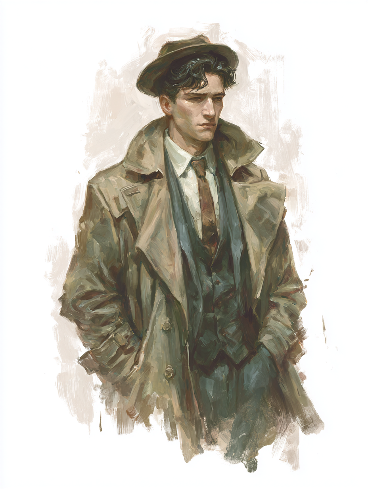

Federal Investigator · Nashoba Posting · Age 27

⟶ Physically unremarkable. INT and CHA suggest capable but not commanding. Low POW is notable — this is a man not yet touched by the uncanny, or one who has been insulated from it. Low DEX: deliberate, not quick.
Scores shown as base + training total. Trained skills in blue indicate assigned proficiencies.
Research (40) and Investigation (35) are the dominant trained skills — Howard is a man of files, cross-references, and careful inference. He finds things out. He will not necessarily prevail in a physical confrontation. Insight (25) and Perception (25) suggest he is harder to fool than he may appear.
Willpower (25) at low POW (6) is characteristic of the Radiance type: rationalist certainty as a bulwark, not spiritual resilience. The question is what happens to that certainty in Nashoba.
The strongest single drive on the sheet. Instructions from ████████ have grown increasingly difficult to square with what Howard observes in the field. The orders are darker than the situation seems to warrant. Clifford is not yet insubordinate — but the gap between what he sees and what he is told to do is widening, and this passion will not stay internal forever.
The deepest wound, surfacing at second-highest intensity. Howard grew up in a household that had voluntarily severed itself from its own community — exchanging Horowitz for Howard, discarding Yiddish, burying socialism. He was raised to belong nowhere in particular. What he finds in Nashoba — a stubborn, syncretic, centuries-deep web of belonging that takes in the abandoned and the strange — is something he has never seen and cannot entirely dismiss as pathology.
The proprietor of Nashoba's only diner; organizer of the knitting circle that benefits the local orphanage. Howard eats there most mornings. She is warm, competent, and clearly a hub of the community he is investigating. He has not yet asked himself how much of his reluctance to report negatively on Nashoba is professional discretion and how much is the fact that Maude seems glad to see him.
Standard issue heavy wool overcoat providing minimal ballistic protection. More useful against Massachusetts winters than against the things Nashoba might eventually produce.
Howard has shown competence in the Police combat style (20) and carries a sidearm. He is not primarily a weapon. His value is analytical. He should not be placed in forward engagement scenarios. He should also not be told this.
Clifford Joel Howard was born in Boston, Massachusetts, to parents who had traveled a very long way — geographically and otherwise — from who they once were. His father and mother were, in an earlier life in Poland, Jewish socialists: participants in a tradition of radical political thought rooted in a specific community, a specific language, a specific set of hopes for the world. That tradition ended at customs.
The name change — Horowitz to Howard — was typical of the period: a pragmatic erasure, a toll paid for admission to the American middle class. With it went the Yiddish, the politics, the particular textures of an immigrant community's internal life. What replaced it was something more generic: Judeo-Christian values, east coast respectability, an apartment in Boston with newspapers in English. Not poverty, but not belonging either.
Clifford grew up largely ignorant of this history. His parents did not discuss what they had set aside; it was simply absent. He was raised in a household that had performed assimilation so thoroughly that the seams were invisible. He learned, implicitly, that the correct response to difference was to minimize it, smooth it over, move on.
Parents: ██████ and ███████ Horowitz (now Howard). Immigrated via Hamburg, 1901. Naturalized 1908. Father employed as a clerk at ████████████ Insurance, Boston. No known remaining ties to Polish Jewish community. No Yiddish spoken in household. Religious observance: nominal Protestant (suspected social performance). Political affiliation: none declared.
He came to federal investigative work through a combination of aptitude and necessity. His Research and Investigation scores are the highest on the sheet. He found bureaucracy legible in a way that social belonging never quite was. The Radiance — whatever it is, precisely, and Howard himself is not entirely certain — found him useful.
"Subject community of Nashoba (designated 'Crossfield' on official Massachusetts survey maps, designation uniformly ignored by residents) has proven more complex in direct observation than reported by prior Radiance sources. Initial assessment of dangerous cultic activity appears to rest on mischaracterization of local practices. Recommend extended observation period before any further action." — Field Report, Month 2 of Posting
Nashoba is old. Older than the county, older than the state, possibly older than the nation's collective memory of this coastline. Its people are several peoples, accumulated over centuries: indigenous communities who were here before the English, settlers who integrated rather than displaced, various arrivals since who found their way to a place that seemed, for reasons not entirely explicable, to take them in.
The result is a culture that is syncretic, insular, and — this is the part that keeps appearing in Howard's reports, always hedged, always qualified — apparently healthy. The community cares for children whom other communities would discard: those born with what the medical establishment calls defects, those who arrived already abandoned, those who are different in ways that Howard is struggling to find a vocabulary for. The local orphanage, organized in part by Maude through her knitting circle, is one of the largest per-capita in the state.
Howard was sent to Nashoba to investigate the Called — described in Radiance intelligence as a dangerous cult. What he has found is harder to categorize. The Called are, in the most accurate description he can manage in his reports, a celebration of fecundity. Their practices are an indirect tribute to something Howard doesn't have a name for yet, something associated with variety, abundance, and the wild proliferating fact of life in all its forms.
Their church — nominally Presbyterian, in the way that Nashoba is nominally anything — is notable for what it does not contain: very little mention of Christ, almost nothing of his Father. What it contains instead are meditations on creation: its variety, its strangeness, its refusal to conform to expectation. The children's service, which Howard attended once in an undercover capacity, left him unsettled in ways he has not fully written into his reports.
Some of Nashoba's older families exhibit characteristics that do not have straightforward explanations. Howard has documented, in private notes he has not transmitted to his handler, at least three individuals with irises that appear to have vertical pupils in certain lights. He has attributed this to his reports as "unusual pigmentation effects, likely hereditary." He is not certain this is accurate. The Shonokin — an older people than the indigenous, according to local tradition, who predated everyone else in this region — are not a category he has a protocol for.
"The community's practice of welcoming children with physical and cognitive differences, while idiosyncratic, appears consistent with longstanding local tradition and is producing measurable positive outcomes in child welfare by any standard metric available to this investigator. I am unable to substantiate the threat designation in current field conditions." — Field Report, Month 3 of Posting
One of the things Howard has slowly come to understand — and which he suspects his handler either doesn't know or doesn't want him to know — is that Nashoba's practice of taking in outsiders, particularly children, serves a function beyond simple charity. The community is by nature insular; without the continued influx of new bloodlines, it would long since have faced the genetic consequences of isolation. The orphanage is not merely benevolent. It is structural. It is how Nashoba survives.
This is not, to Howard's increasingly complicated mind, evidence of predatory cult behavior. It is evidence of a community that found a way to remain itself across centuries. He is beginning to wonder what that looks like from the inside.
Incoming directives from Howard's handler have escalated in urgency over the three-month posting. Initial instructions were standard investigative: observe, document, assess threat level. Recent instructions have moved toward operational language. Howard has not yet acted on these instructions. He has not yet explicitly refused them. The gap between these two positions is narrowing.
Howard's passion score for "Distrust His Handler" sits at 40 — the highest value on his sheet. This is not idle skepticism; this is a man who has seen enough to understand that his handler's picture of Nashoba does not match the place he has been living in for three months. The handler's instructions assume a community that needs to be disrupted. Howard's field evidence suggests a community that needs to be left alone.
What Howard does not yet fully understand is what the Radiance actually is, what it wants from Nashoba, and whether his handler's instructions represent the institution's genuine interests or something more specific — a faction, a fear, a decades-old grudge against a community that has never fit any category neatly.
What Clifford Howard is watching in Nashoba is a continuity of community — a thing that survives, that remembers, that takes in the people other communities reject, that has its own logic running centuries deep. He has never had this.
His parents traded continuity for admission. The bargain was probably rational given the alternatives. But it left Howard with no unbroken thread to follow back — no community to belong to, no tradition to stand inside of, no way of being in the world that was his by inheritance. The Radiance, with its brisk rationalism and its mission and its files, gave him a substitute: a framework, a purpose, a set of tools. He was good at the tools.
What Nashoba is doing — slowly, without apparent intention — is showing him that the tools don't describe everything. That the thing his parents gave up was real. That the thing Nashoba has maintained for centuries, through whatever means and whatever influences, is also real, and not obviously malevolent, and possibly worth something his handler's directives cannot account for.
The genre setup here is inverted deliberately. The detective arrives in a strange town expecting to find something wrong and finds instead something strange that is not wrong — finds, in fact, that his presence and his instructions are the most dangerous element in the equation. The community's idiosyncrasies are not symptoms. They are character. The horror, if there is one, is what his handler might do to it.
Low POW (6) is the mechanical signature of a man who has been insulated from the truly uncanny. The Rationality Points (6) and zero Voorish Points confirm this: Howard is a rationalist operating in the correct mode for his professional training and his upbringing. Both are about to be tested.
The question the character poses to the campaign: what happens when a man trained to find threats discovers that the only real threat is himself?
"I have been in Nashoba for eleven weeks. I have not found what I was sent to find. I have found something else. I am not yet certain what to do with the difference." — Private journal, not transmitted. Month 3.